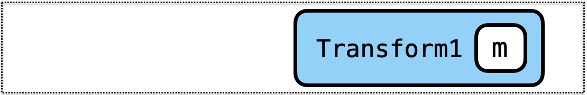
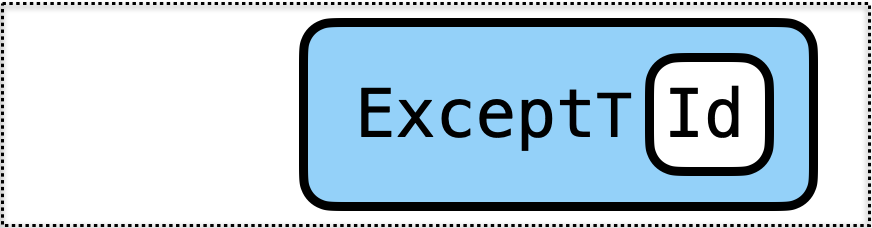
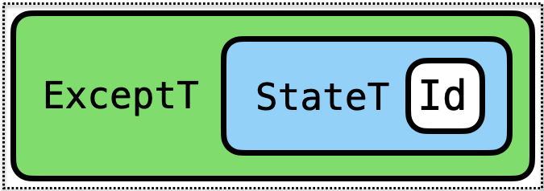
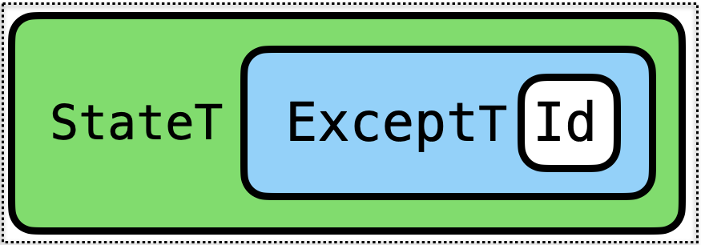

Monads Can Be Used for Many Things!
- Partial Functions
- Global Variables
- Parsing
- Exceptions
- Test Generation
- Concurrency
- …
Exception Handling
Recall our expressions with division
data Expr
= Number Int -- ^ 0,1,2,3,4
| Plus Expr Expr -- ^ e1 + e2
| Div Expr Expr -- ^ e1 / e2
deriving (Show)We had a potentially crashing evaluator
eval :: Expr -> Int
eval (Number n) = n
eval (Plus e1 e2) = eval e1 + eval e2
eval (Div e1 e2) = eval e1 `div` eval e2
-- >>> eval (Div (Val 10) (Plus (Number 5) (Number (-5))))
-- Exception: Divide by zero
We defined a Result type
data Result a = Ok a | Err Stringmade it a Monad
instance Monad Result where
return x = Ok x
(Ok v) >>= f = f v
(Err s) >>= _ = Err sand then we can write
eval :: Expr -> Result Int
eval (Number n) = return n
eval (Plus e1 e2) = do {n1 <- eval e1; n2 <- eval e2; return (n1 + n2) }
eval (Div e1 e2) = do { n1 <- eval e1;
n2 <- eval e2;
if n2 /= 0
then return (n1 `div` n2)
else Err ("DBZ: " ++ show e2)
}which doesn’t crash but returns an Err
>>> eval (Div (Number 10) (Plus (Number 5) (Number (-5))))
Err "DBZ: Plus (Number 5) (Number (-5))"and when it succeeds it returns an Ok
>>> eval (Div (Number 10) (Plus (Number 5) (Number (-5))))
Ok 1
Generalizing Result to Either
The standard library generalizes the Result type to Either
data Result a = Err String | Ok a
data Either e a = Left e | Right aErr sbecomesLeft sOk vbecomesRight vResult abecomesEither String a
(But we can data other than String in the Left values)
EXERCISE: Generalizing Result Monad to Either Monad
Lets translate the old Monad instance for Result
instance Monad Result where
-- return :: a -> Result a
return x = Ok x
-- (>>=) :: Result a -> (a -> Result b) -> Result b
(Ok v) >>= f = f v
(Err s) >>= _ = sinto a Monad instance for Either
instance Monad (Either e) where
-- return :: a -> Either e a
return x = ???
-- (>>=) :: Either e a -> (a -> Either e b) -> Either e b
(Right v) >>= f = ???
(Left s) >>= _ = ???
QUIZ
We can rewrite eval to return an Either
eval :: Expr -> Either Expr Int
eval (Number n) = return n
eval (Plus e1 e2) = do n1 <- eval e1
n2 <- eval e2
return (n1+n2)
eval (Div e1 e2) = do n1 <- eval e1
n2 <- eval e2
if n2 /= 0
then return (n1 `div` n2)
else Left e2What does quiz evaluate to?
quiz = eval (Div (Val 10) (Plus (Number 5) (Number (-5))))A. Err "DBZ: Plus (Number 5) (Number (-5))"
B. Left "DBZ: Plus (Number 5) (Number (-5))"
C. Run-time Exception
D. Plus (Number 5) (Number (-5))
E. Left (Plus (Number 5) (Number (-5)))
Either is an Exception Monad!
What can you do with exceptions?
throwErroran exception (with some value) …catchErroran exception (and use its value) …
1. throwing an Exception
We can simply define
throw :: e -> Either e a
throw exn = Left exnand now voila
eval :: Expr -> Either Expr Int
eval (Number n) = return n
eval (Plus e1 e2) = do n1 <- eval e1
n2 <- eval e2
return (n1 + n2)
eval (Div e1 e2) = do n1 <- eval e1
n2 <- eval e2
if n2 /= 0
then return (n1 `div` n2)
else throw e2Exactly the same evaluator
Result is a
Left==> an exception came all the way to the top.Eithermonad ensures the “exception” shoots to the top!
>>> eval (Div (Numer 10) (Plus (Number 5) (Number (-5))))
Left (Minus (Number 5) (Number 5))No further evaluation happens after a throw because ???
catching an exception
How to catch an exception?
Lets change our Expr type to
data Expr
= Number Int -- ^ 0,1,2,3,4
| Plus Expr Expr -- ^ e1 + e2
| Try Expr Int
deriving (Show)Informally, try e n evaluates to e but
if
eis undefined due to divide-by-zerothen evaluate to
n
eval :: Expr -> Either Expr Int
eval (Number n) = return n
eval (Plus e1 e2) = do n1 <- eval e1
n2 <- eval e2
return (n1+n2)
eval (Div e1 e2) = do n1 <- eval e1
n2 <- eval e2
if n2 /= 0
then return (n1 `div` n2)
else throw e2
eval (Try e n) = catch (eval e) (\_ -> return n)QUIZ
What should the type of catch be?
A. Either e a -> (a -> Either e b) -> Either e b
B. Either e a -> (e -> Either e b) -> Either e b
C. Either e a -> (e -> Either e a) -> Either e a
D. Either e a -> Either e a -> Either e a
E. Either e a -> Either e b -> Either e b
Implementing catch
Lets implement the catch function!
catch :: Either e a -> (e -> Either e a) -> Either e a
catch (Left e) handler = ???
catch (Right a) handler = ???
QUIZ
catch :: Either e a -> (e -> Either e a) -> Either e a
catch (Left e) handle = ???
catch (Right a) handler = ???
eval :: Expr -> Either Expr Int
eval (Number n) = return n
eval (Plus e1 e2) = do n1 <- eval e1
n2 <- eval e2
return (n1+n2)
eval (Div e1 e2) = do n1 <- eval e1
n2 <- eval e2
if n2 /= 0
then return (n1 `div` n2)
else throw e2
eval (Try e n) = catch (eval e) (\_ -> return n)
e1 = Div (Number 10) (Plus (Number 5) (Number (-5)))
e1' = Try e1 7
quiz = eval (Try e1 7)What does quiz evaluate to?
A. Right 7
B. Left 7
C. Right 0
D. Left 0
E. Left (Plus (Number 5) (Number (-5)))
Either is an Exception Monad!
throwan exception (with some value) …catchan exception (and use its value) …
throw :: e -> Either e a
throw e = Left e
catch :: Either e a -> (e -> Either e a) -> Either e a
catch (Left e) handle = handle e
catch (Right e) _ = Right e
Monads Can Be Used for Many Things!
- Partial Functions
- Global State
- Parsing
- Exceptions
- Test Generation
- Concurrency
- …
… but what if I want Exceptions and Global State ?
Mixing Monads
What if I want Exceptions and Global State ?
Profiling with the ST Monad
Lets implement a profiling monad that counts the number of operations
-- A State-Transformer with a "global" `Int` counter
type Profile a = State Int aWe can write a runProfile that
- executes the transformer from
0 - and renders the result
runProfile :: (Show a) => Profile a -> String
runProfile st = showValCount (runState st 0)
showValCount :: (Show v, Show c) => (v, c) -> String
showValCount (val, count) = "value: " ++ show val ++ ", count: " ++ show countA function to increment the counter
count :: Profile ()
count = do
n <- get
put (n+1)
A Profiling Evaluator
We can use count to write a profiling evaluator
evalProf :: Expr -> Profile Int
evalProf = eval
where
eval (Number n) = return n
eval (Plus e1 e2) = do n1 <- eval e1
n2 <- eval e2
count
return (n1+n2)
eval (Div e1 e2) = do n1 <- eval e1
n2 <- eval e2
count
return (n1 `div` n2) And now, as there are two operations, we get
>>> e1
Div (Number 10) (Plus (Number 5) (Number 5))
>>> runProfile (evalProf e1)
"value: 1, count: 2"
But what about Divide-by-Zero?
Bad things happen…
>>> e2
Div (Number 10) (Plus (Number 5) (Number (-5)))
>>> runProfile (evalProf e2)
*** Exception: divide by zero
"value: Problem: How to get global state AND exception handling ?
Mixing Monads with Transformers
Start with a Basic Monad

m implements
- no special operations
Transform it to add some Capabilities

Transform1 m implements
moperations and- operations added by
Transform1
Transform again to add more Capabilities

Transform2 (Transform1 m) implements
moperations and- operations added by
Transform1and - operations added by
Transform2
… And so on

Transform3 (Transform2 (Transform1 m)) implements
moperations and- operations added by
Transform1and - operations added by
Transform2and - operations added by
Transform3…
Reminiscent of the Decorator Design Pattern or Python’s Decorators.
Mixing Monads with Transformers
Step 1: Specifying Monads with Extra Features
Step 2: Implementing Monads with Extra Features
Specifying Monads with Extra Features
First, instead of using concrete monads
- e.g.
ProfileorEither
We will use type-classes to abstractly specify a monad’s capabilities
- e.g.
MonadState s morMonadError e m
A Class for State-Transformers Monads
The class MonadState s m defined in the Control.Monad.State says
mis a State-Transformer monad with state types
class Monad m => MonadState s m where
get :: m s
put :: s -> m ()That is to say, m implements
>>=andreturnoperations specified byMonadandgetandputoperations specified byMonadState!
Generalize Types to use Classes
So we can generalize the type of count to use MonadState Int m
count :: (MonadState Int m) => m ()
count = do
n <- get
put (n+1)
A Class for Exception Handling Monads
The class MonadError e m defined in [Control.Monad.Except][6] says
mis a Exception-Handling monad with exception typee
class Monad m => MonadError e m where
throwError :: e -> m a
catchError :: m a -> (e -> m a) -> m aThat is to say, m implements
>>=andreturnoperations specified byMonadandthrowErrorandcatchErroroperations specified byMonadError!
Generalize Types to use Classes
So we can generalize the type of tryCatch to use MonadError e m
tryCatch :: (MonadError e m) => m a -> a -> m a
tryCatch m def = catchError m (\_ -> return def)
Generalize eval to use Constraints
We can now specify that eval uses a monad m that implements
MonadState IntandMonadError Expr
eval :: (MonadState Int m, MonadError Expr m) => Expr -> m Int
eval (Number n) = return n
eval (Plus e1 e2) = do n1 <- eval e1
n2 <- eval e2
count
return (n1 + n2)
eval (Div e1 e2) = do n1 <- eval e1
n2 <- eval e2
count
if (n2 /= 0)
then return (n1 `div` n2)
else throwError e2
eval (Try e n) = tryCatch (eval e) nLets try to run it!
>>> e1
>>> evalMix e1
... GHC yells "please IMPLEMENT this MAGIC monad that implements BOTH features"
Mixing Monads with Transformers
Step 1: Specifying Monads with Extra Features
Step 2: Implementing Monads with Extra Features
Implementing Monads with Extra Features

Transform2 (Transform1 m) implements
moperations and- operations added by
Transform1and - operations added by
Transform2
We require
- A basic monad
m - A Transform1 that adds
Statecapabilities - A Transform2 that adds
Exceptioncapabilities
A Basic Monad
First, lets make a basic monad
- only implements
>>=andreturn
data Identity a = Id a
instance Monad Identity where
return a = Id a
(Id a) >>= f = f aA very basic monad: just a wrapper (Id) around the value (a)
- No extra features
A Transform that adds State Capabilities
The transformer StateT s m defined in the Control.Monad.State module - takes as input monad m and
- transforms it into a new monad
m'
such that m' implements
all the operations that
mimplementsand adds State-transformer capabilities
StateT s m satisfies the constraint (MonadState s (StateT s m))
A State-transformer over Int states
type Prof = StateT Int Identity 
We can go back and give evalProf the type
evalProf :: Expr -> Prof Int
A Transform that adds Exception Capabilities
The transformer ExceptT e m
- takes as input a monad
mand - transforms it into a new monad
m'
such that m' implements
all the operations that
mimplementsand adds Exception-handling capabilities
ExceptT e m satisfies the constraint (MonadError e (ExceptT e m))
An Exception Handler Monad with Expr-typed exceptions
type Exn = ExceptT Expr Identity 
We can go back and give evalThrowCatch the type
evalThrowCatch :: Expr -> Exn Int
Composing Transformers
We can use both transformers to get both powers!
type ExnProf a = ExceptT Expr (StateT Int (Identity)) a
ExnProf implements State-transformer-over Int and Exception-handling-over-Expr
EXERCISE: Executing the Combined Transformer
Recall that
type ExnProf a = ExceptT Expr (StateT Int (Identity)) aLets write a function
runExnProf :: (Show a) => ExnProf a -> String
runExnProf epm = ???such that
>>> runExnProf (eval e1)
"value: 1, count: 2"
>>> runExnProf (eval e2)
"Plus (Number 5) (Number (-5)) after 2 operations"
TRY AT HOME: Combining in a Different Order
We can also combine the transformers in a different order
type ProfExn a = StateT Int (ExceptT Expr (Identity)) a
ExnProf implements State-transformer-over Int and Exception-handling-over-Expr
Can you implement the function
runProfExn :: (Show a) => ProfExn a -> Stringsuch that when you are done, we can get the following behavior?
>>> runProfExn (eval e1)
"value: 1, count: 2"
>>> runProfExn (eval e2)
"Left (Plus (Number 5) (Number (-5)))"
Summary: Mixing Monads with Many Features
1. Transformers add capabilities to Monads

Transform2 (Transform1 m) implements
moperations and- operations added by
Transform1and - operations added by
Transform2
2. StateT and ExceptT add State and Exceptions
- Start with a basic monad
Identity - Use
StateT Intto add global-Intstate-update capabilities - Use
ExceptT Exprto add exception-handling capabilities
Play around with this in your homework assignment!